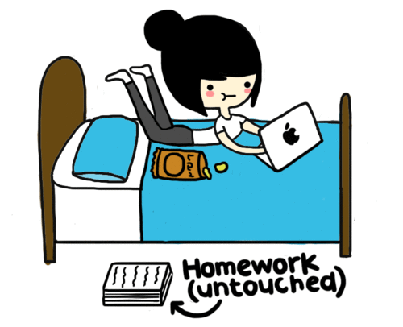
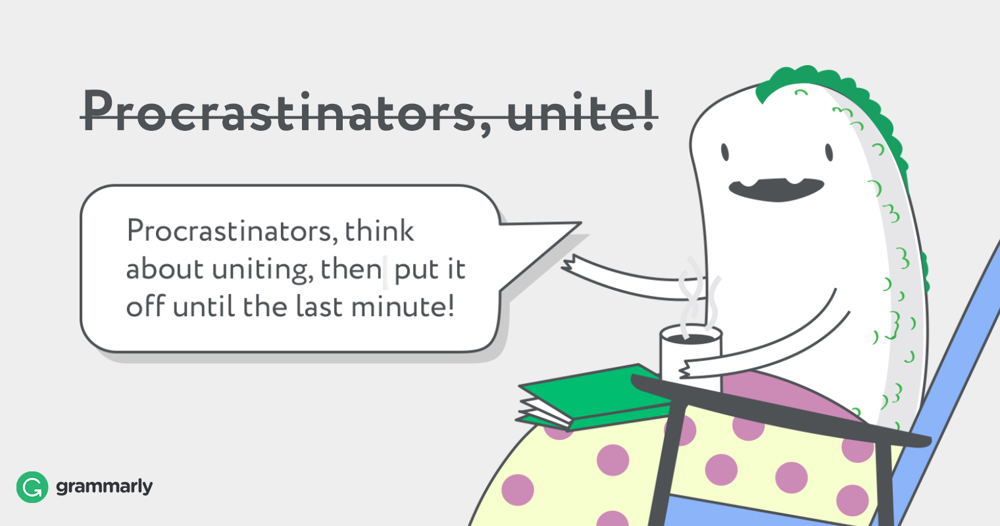

I don't know what I am doing...1 |
||
How to procrastinate?2Let's watch a bunch of YouTube videous on creatures of the deep sea and then go on a YouTube spiral that takes us through Richard Feynman talking about String Theory and ends with us watching interviews with Justin Bieber's mom! |
Procrastination is not laziness 4 Procrastinators often put off doing things, leave them to the very last moment or sometimes even spend their time staring at the wall. However be careful, procrastination is not a synonym for lazy. Lazy people, simply don’t do anything and are just fine with it. Procrastinators, on the other hand, have the desire to actually do something but can’t force themselves to start. It's a good idea to start using the word procrastination instead of using the terms laziness or putting things off. It provides a much more accurate description of your situation. Only by giving the right name to your problem can you begin working on it. |
|
|

5 Stages of procrastination.
|
||
Relaxation is not procrastination6 Don’t confuse procrastination with relaxation either. Relaxing recharges you with energy. In stark contrast, procrastination drain it from you. The less energy you have, the more stressed or even depressed you might have become and the higher the chances of you putting off your responsibilities are. |
||
I'm ready7 |
||